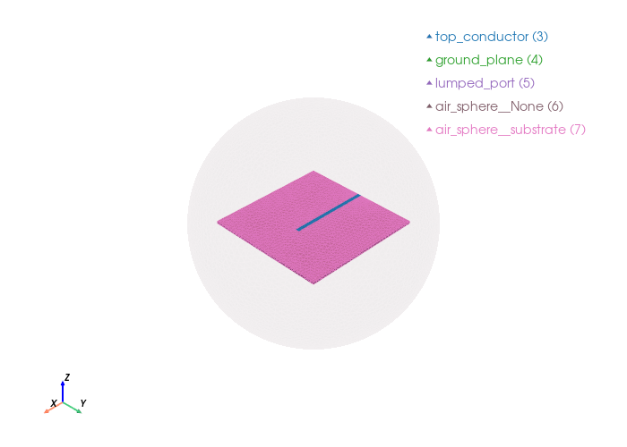

Open ended stub antenna#
An open-ended stub antenna is a simple radiating element consisting of a transmission line (typically microstrip or coaxial cable) with one end open-circuited, allowing electromagnetic energy to radiate directly into free space.
import gmsh
import math
from palacetoolkit.viz import view_mesh
from palacetoolkit.mesh import (
Entity,
run_entity_pipeline,
generate_3d_mesh,
create_graded_mesh
)
from palacetoolkit.simulation import Simulation
Paramters#
l1 : Ground plane length along x-axis, specified as a scalar in meters
w1 : Ground plane width along y-axis, specified as a scalar in meters
h : Patch height along z-axis, specified as a scalar in meters.
strip_line_length : Notch length along x-axis, specified as a scalar in meters.
strip_lined_width: Notch width along y-axis, specified as a scalar in meters.
air_height : Air-domain height reference for sizing the enclosing sphere, specified as a scalar in meters.
air_margin : Air-domain margin along x and y axes used for sphere sizing, specified as a scalar in meters.
freq : Simulation frequency in GHz, specified as a scalar.
filename : Output mesh filename, specified as a string.
l1: float = 0.06
w1: float = 0.06
strip_line_length: float = 0.04
strip_line_width: float = 0.002
h: float = 0.0013
air_height: float = 0.025
air_margin: float = 0.025
freq: float = 3.3
filename: str = "open_ended_antenna.msh"
wavelength = 3e8 / (freq * 1e9)
Model initialization#
gmsh.initialize()
gmsh.model.add("patch_antenna")
kernel = gmsh.model.occ
Geometry construction#
# Total domain bounds
total_xmin = -l1/2 - air_margin
total_xmax = l1/2 + air_margin
total_ymin = -w1/2 - air_margin
total_ymax = w1/2 + air_margin
total_zmax = h + air_height
# Substrate box
substrate = kernel.addBox(-l1/2, -w1/2, 0, l1, w1, h)
# Ground plane
ground_plane = kernel.addRectangle(-l1/2, -w1/2, 0, l1, w1)
# Top conductor
strip_line_1 = kernel.addRectangle(-l1/2, -strip_line_width/2, h, strip_line_length, strip_line_width)
# gap bewteen the ground plane and the bottom of the lumped port.
gap = 0
# lumped port
lumped_port = kernel.addRectangle(-l1/2 + gap, -strip_line_width/2, 0, h - gap, strip_line_width)
kernel.rotate([(2, lumped_port)], -l1/2, 0, 0, 0, 1, 0, -math.pi/2)
# Air sphere
airsphere_radius = max(abs(total_xmin), abs(total_xmax), abs(total_ymin), abs(total_ymax), total_zmax)
air_sphere = kernel.addSphere(0.0, 0.0, 0.0, airsphere_radius)
# Synchronize everything!
kernel.synchronize()
# Define the entities which later will become the physical groups.
entities = [
Entity("air_sphere", dim=3, btype="dielectric", mesh_order=2, tags=[air_sphere], eps_r=1.0, mu_r=1.0, loss_tan=0.0),
Entity("substrate", dim=3, btype="dielectric", mesh_order=1, tags=[substrate], eps_r=2.2, mu_r=1.0, loss_tan=0.0009),
Entity("top_conductor", dim=2, btype="pec", mesh_order=1, tags=[strip_line_1]),
Entity("ground_plane", dim=2, btype="pec", mesh_order=1, tags=[ground_plane]),
Entity("lumped_port", dim=2, btype="lumped_port", mesh_order=0, tags=[lumped_port], R=50.0, direction="+Z")
]
# Boolean operations to guarantee a nice mesh, algo it returns the
# physical group map.
pg_map = run_entity_pipeline(entities)
# Refine near the top conductor and locally the lumped port
create_graded_mesh( wavelength,
ppw_near=50,
ppw_far=30,
set_as_background=True,
local_refinements = {entities[-1].dimtags[0]: 150})
# Mesh sizes
mesh_sizes = {
"substrate": wavelength / 12,
"air_sphere": wavelength / 4,
"lumped_port": wavelength / 150,
"ground_plane" : wavelength / 10,
"top_conductor": wavelength / 50
}
# Generate the 3d mesh.
generate_3d_mesh(entities, mesh_sizes, filename, optimize = True)
Physical group 'air_sphere' (dim=3): pg=1, tags=[2]
Physical group 'substrate' (dim=3): pg=2, tags=[1]
Physical group 'top_conductor' (dim=2): pg=3, tags=[8]
Physical group 'ground_plane' (dim=2): pg=4, tags=[7]
Physical group 'lumped_port' (dim=2): pg=5, tags=[9]
Physical group 'air_sphere__None' (dim=2): pg=6, tags=[16]
Physical group 'air_sphere__substrate' (dim=2): pg=7, tags=[10, 11, 13, 15, 14, 12]
ignoring 3 curves from {'air_sphere__None'}
global: 21 curves, SizeMin=0.0018
ppw_near=50 ppw_far=30
SizeMax=0.0030 transition=0.0227
local: dimtag=(2, 9), ppw=150, SizeMin=0.0006
Mesh saved to open_ended_antenna.msh
Nodes: 30128
Elements: 178626
Mesh visualization.#
# Render the physical groups. The air sphere is rendered transparent.
view_mesh(filename, transparent_groups= "air_sphere__None")
Loading mesh file: open_ended_antenna.msh
Groups to render transparent: air_sphere__None
Mesh loaded successfully with 2 cell blocks
Found 16412 triangles total
Physical group tags in mesh: {3: 'top_conductor', 4: 'ground_plane', 5: 'lumped_port', 6: 'air_sphere__None', 7: 'air_sphere__substrate'}

Generate palace JSON config#
config_filename: str = "op_spalace.conf"
freq_min: float = 3.0
freq_max: float = 3.5
freq_step: float = 0.005
eps_r: float = 2.2
loss_tan: float = 0.0009
port_impedance: float = 50.0
solver_order: int = 2
sim = Simulation()
def attr(name):
return [pg_map[name]] if name in pg_map else []
sim.set_mesh_file(filename)
sim.set_config_option("Problem.Output", "postpro/open_ended_antenna/")
sim.set_config_option("Domains.Materials", [
{
"Attributes": attr("substrate"),
"Permittivity": eps_r,
"Permeability": 1.0,
"LossTan": loss_tan
},
{
"Attributes": attr("air"),
"Permittivity": 1.0,
"Permeability": 1.0
}
])
sim.set_config_option("Boundaries.PEC", {
"Attributes": attr("ground_plane") + attr("patch")
})
sim.set_config_option("Boundaries.LumpedPort", [
{
"Index": 1,
"Attributes": attr("lumped_port"),
"R": port_impedance,
"Excitation": True,
"Direction": "+Z"
}
])
sim.set_config_option("Boundaries.Absorbing", {
"Attributes": attr("farfield"),
"Order": 1
})
sim.set_config_option("Solver.Order", solver_order)
sim.set_config_option("Solver.Driven.MinFreq", freq_min)
sim.set_config_option("Solver.Driven.MaxFreq", freq_max)
sim.set_config_option("Solver.Driven.FreqStep", freq_step)
sim.set_config_option("Solver.Driven.AdaptiveTol", 0.001)
config_path = sim.write_config(config_filename)
print(f"Wrote {config_path}")
Palace config written to op_spalace.conf
Wrote op_spalace.conf